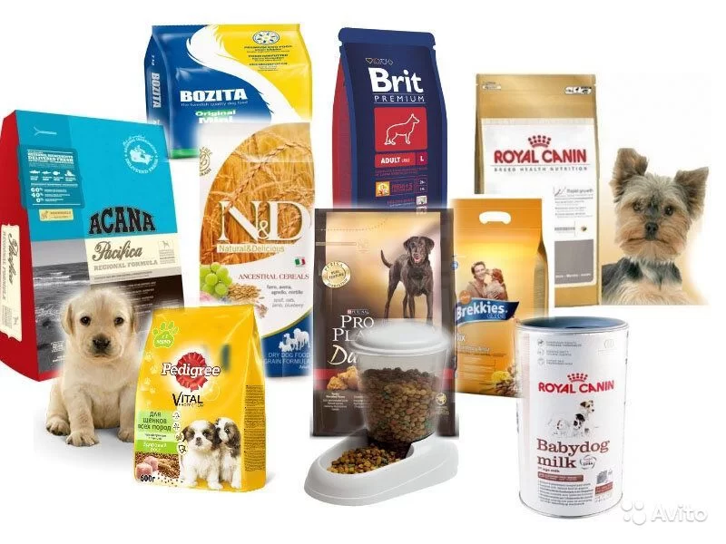
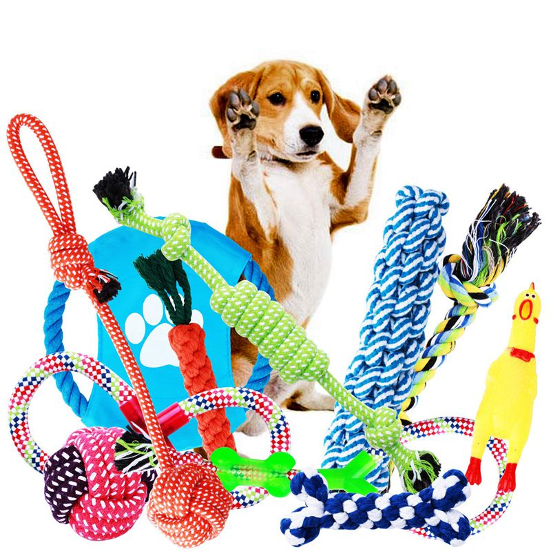

За нашими животными постоянно заботятся. Производится ежедневная уборка в вольерах. Кормят 2 раза в день: утром и вечером. При наличии симптомов заболеваний, отвозят их в ветеринарную клинику.
Несмотря на то, что корм покупается по большей части при помощи материальной поддержки от неравнодушных людей, мы стараемся покупать качественный корм от известных марок.
Pedigree - Это полезная и вкусная еда, приготовленная с учётом всех физиологических потребностей собак разных пород.
Даёт организму все необходимые элементы:
- линолевую кислоту и цинк для здоровья кожи и шерсти;
- кальций для крепких и здоровых зубов;
- высокоусвояемые ингредиенты для здорового пищеварения;
- витамин Е и цинк для поддержки иммунной системы.
PRO PLAN Delicate - сбалансированный корм для кошек, который сочетает все основные питательные вещества.
Содержит OPTIRENAL - специальное сочетание питательных веществ, включая антиоксиданты,
аргинин и омега-3 жирные кислоты. Имеет высокое содержание белков и витаминов.
Формула с ограниченным числом белков и высококачественными ингредиентами.
Приготовлен из высококачественных ингредиентов со специальной приятной оболочкой гранул.
Приютам и животным важна любая помощь из нижеперечисленных
 Один из основных вариантов помощи приюту - это покупка специализированного корма для животных. Если вы не уверены, подойдёт ли корм, лучше уточните у конкретного приюта. Не покупайте корма с большим количество исскуственных красителей и ароматизаторов.
 Кроме того, приюты готовы принять ненужные игрушки для животных, переноски, когтеточки, дома и различные комплексы, если они находятся в хорошем состоянии, исправны и имеют опрятный внешний вид. Дополнительно может приниматься одежда для миниатюрных собак, но предварительно постиранная.
Очень важна и финансовая поддержка приютов. Будьте уверены, что средства будут потрачены на благоустройство приюта, корм животным и не пойдут в карман сотрудникам. При необходимости будут предоставлены чеки расходов.
Тут вы можете рассмотреть различные детали 3D композиции
Здесь вы можете найти множество видео из жизни приюта
Хотите послушать интересные подкасты о приютах? Тогда вам сюда!
Подкаст 1. Как переделать комнату в приют для животных
Подкаст 2. Самый большой приют для кошек в России
Подкаст 3. Как выбрать собачку из приюта
Посчитайте сколько ккал корма стоит давать вашему питомцу
|
Возраст: |
Вес: |
Тип: |
||
|
Уровень физической активности: |
||||
Посчитайте сколько лет было бы вашему питомцу, если бы он был человеком
|
Возраст: |
Вес: |
Тип: |
||
|
Уровень физической активности: |
||||